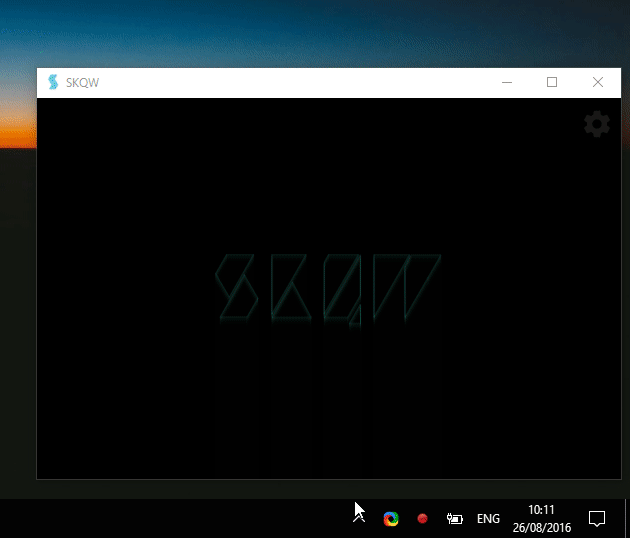

How To Guides
Updated: 2017-03-08
(Windows) Enable Stereo Mix
SKQW will pick up whatever recording device is configured for your sound card. On your computer, this may be the microphone. To visualize music playing on your system, you’ll need to set the recording device to “stereo mix” on Windows. Here is a gif demonstrating how to do it on Windows 10.
